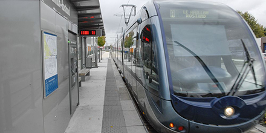

Le fait du jour
Dans le tram, les usagers s'interrogent
Bordeaux - Les usagers du tramway rencontrés, hier, sont plutôt favorables aux mesures gouvernementales
Ligne A, tramway de Bordeaux, hier en début d'après-midi. Plus de la moitié des places sont libres dans la rame où l'on prend place. Pour autant les mesures de sécurité sont loin d'être respectées par tous. Ça et là on trouve des grappes de quatre ou cinq personnes avec moins d'un mètre d'écart. " Et encore à Bordeaux les gens ont moins tendance à s'agglutiner que dans d'autres villes ", assure cette voyageuse originaire de Lyon.
« Fixer un cadre légal »
N'empêche, la situation complique le travail des contrôleurs qui ne peuvent qu'inviter les usagers à prendre leurs distances les uns avec les autres sans pouvoir les y contraindre. Les mesures annoncées mardi par Édouard Philippe peuvent-elles modifier la donne ? Patrick, retraité et usager régulier du tram, aimerait y croire : " C'est bien de fixer un cadre légal. Ces décisions vont dans le bon sens. Ici on n'a pas été trop touchés par le coronavirus. Il faut que ça continue. "